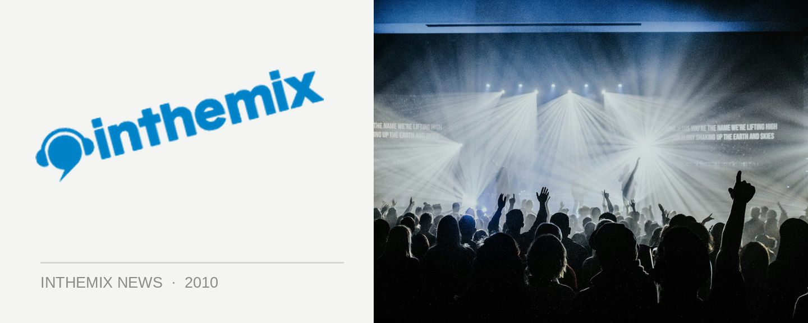

Good Vibrations set times hit ITM
You know the New Year is in full swing when the set times for the major festivals are unleashed, and looking forward to the return of the massive Good Vibrations Festival next month, the set times have already landed for us to have a look at. But with a lineup featuring heavyweights like Basement Jaxx, Armand Van Helden, Friendly Fires, Plump DJs, Dave Seaman, Chase & Status and heaps more on the lineup, it’s worth starting thinking about now how you’re gonna plan your day. So without anymore delay…
CHECK OUT THE GOOD VIBRATIONS FESTIVAL SET TIMES ON ITM